01 — 3D animation
Sting rays
The frame assembles itself: temples, hinges and lens chassis come together into the finished form.
Open the bookI’ve worked with a wide range of clients, from luxury apparel brands to independent labels, helping them shape products that feel elevated, purposeful and manufacturable.
01 — 3D animation
The frame assembles itself: temples, hinges and lens chassis come together into the finished form.
Open the book02 — 3D animation
The slide prints itself layer by layer, from the rippled sole up through the one-piece upper to the finished form.
Open the book
01 — Product design, eyewear
![Sting Rays, concept sketching: line studies of a stingray's silhouette beside a red geometric construction of its form. Projects, Sting rays. Concept Sketching. Initial sketches explore the distinctive silhouette of stingrays, focusing on their sweeping wings, tapered tails and fluid body contours. Through a series of simplified line studies, these organic forms are abstracted into sharp, aerodynamic geometries, establishing a visual language that balances movement, structure and sculptural expression. Process. The design process begins by studying the stingray's anatomy and translating its defining features into functional eyewear elements. The sweeping wings inspire the frame's extended contours, while the tapered tail influences the streamlined temples. Selected sketches are refined through geometric construction, exploring proportion, curvature and transitions between surfaces. This approach preserves the fluid character of the original inspiration while developing a cohesive, wearable form that combines biomimicry with futuristic aesthetics.](assets/images/sting-rays-frame-concept.webp)
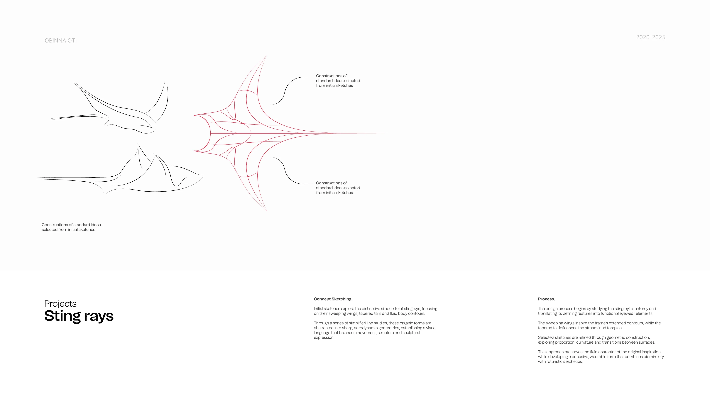
![Sting Rays, technical sketching: side and perspective sketches of the frame, constructions on standard head sizes, and the final top view. Technical Sketching. The selected concept is further developed through detailed technical sketches, refining the frame's geometry, proportions and structural transitions. Particular attention is given to the relationship between the lens housing, bridge and temples, ensuring the organic forms translate into a cohesive and functional design. Process. Ergonomic considerations guide the refinement process, with studies of facial curvature, temple positioning, nose support and overall fit. Front, side and perspective views are used to evaluate proportions, clearances and how the frame interacts with the face. These explorations establish a clearer understanding of the product's construction and dimensional requirements, providing a foundation for accurate CAD modelling, where the design can be further refined for fit, assembly and manufacturing feasibility.](assets/images/sting-rays-frame-14.webp)
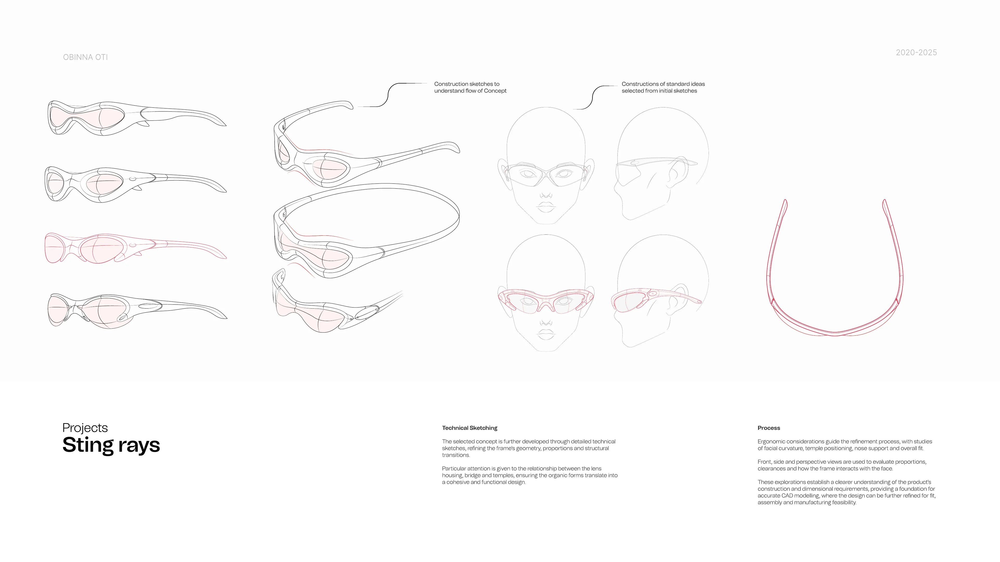
![Sting Rays, 3D visualisation: a close render of the cobalt frame with its amber lining and gold hinge, beside the frame in three colourways. 3D Visualisation. High-fidelity visualisations explore material finishes, colour combinations and reflective properties, highlighting the interplay between sculptural surfaces and intricate mechanical details. The use of metallic accents, translucent lenses and high-gloss finishes reinforces the design's futuristic identity. This stage provides a clearer understanding of the product's form, construction and visual character, allowing the design to be evaluated and refined ahead of prototyping and manufacturing.](assets/images/sting-rays-frame-38.webp)
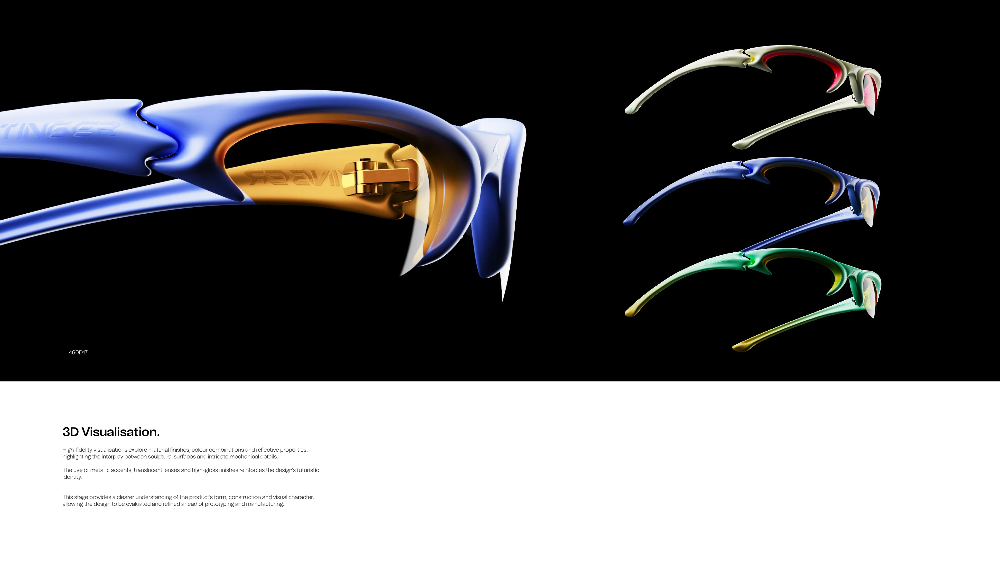
![Sting Rays, 3D visualisation: two close renders of the cobalt frame, one showing the metal hinge and one the gold hinge inside the amber lining. 3D Visualisation. Building on the technical sketches, the selected concept is developed into a detailed 3D model, transforming the initial two-dimensional explorations into a fully realised product. This stage focuses on translating the stingray's distinctive anatomy into a cohesive eyewear design, balancing expressive, organic forms with structural precision and functional considerations. Through careful surface modelling, the sweeping contours, tapered extensions and sculptural transitions are refined to create a continuous visual flow across the frame.](assets/images/sting-rays-frame-39.webp)
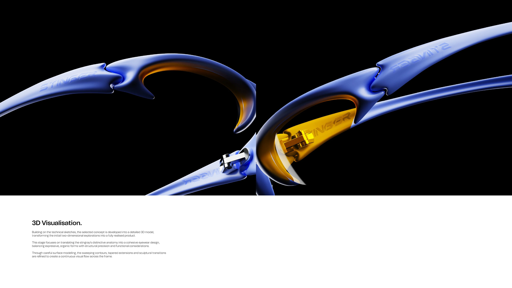
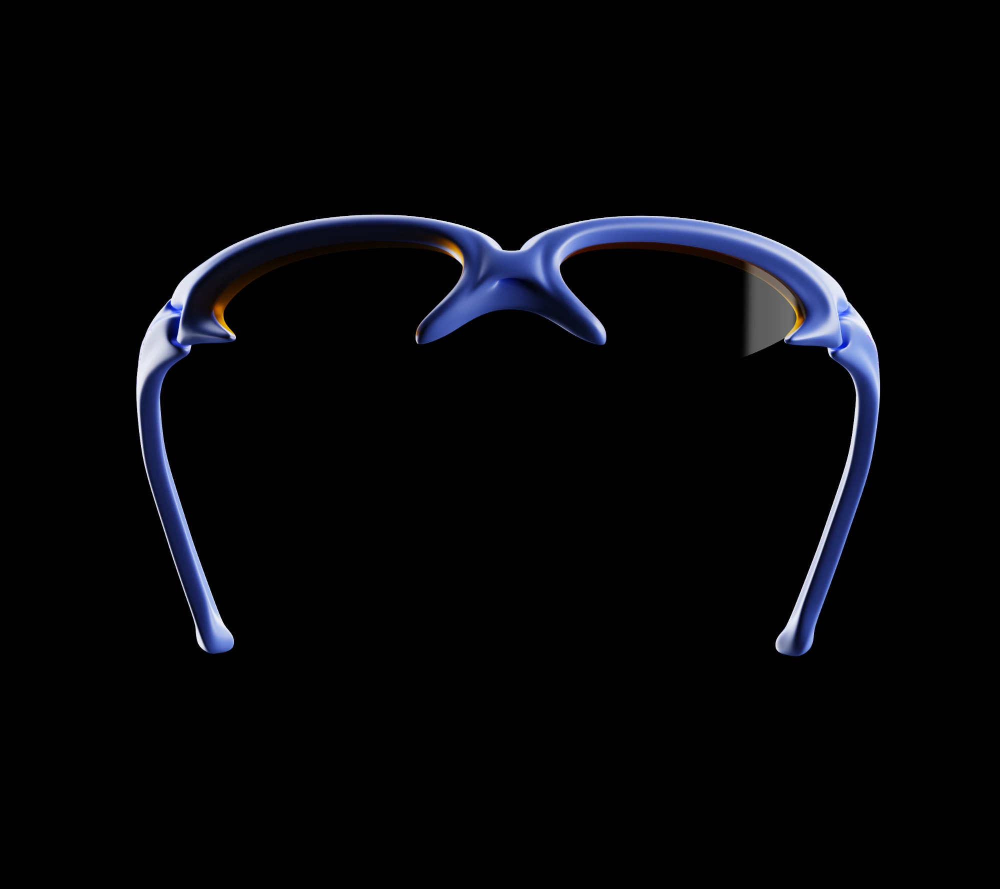
Frame Brow bar, bridge and temples
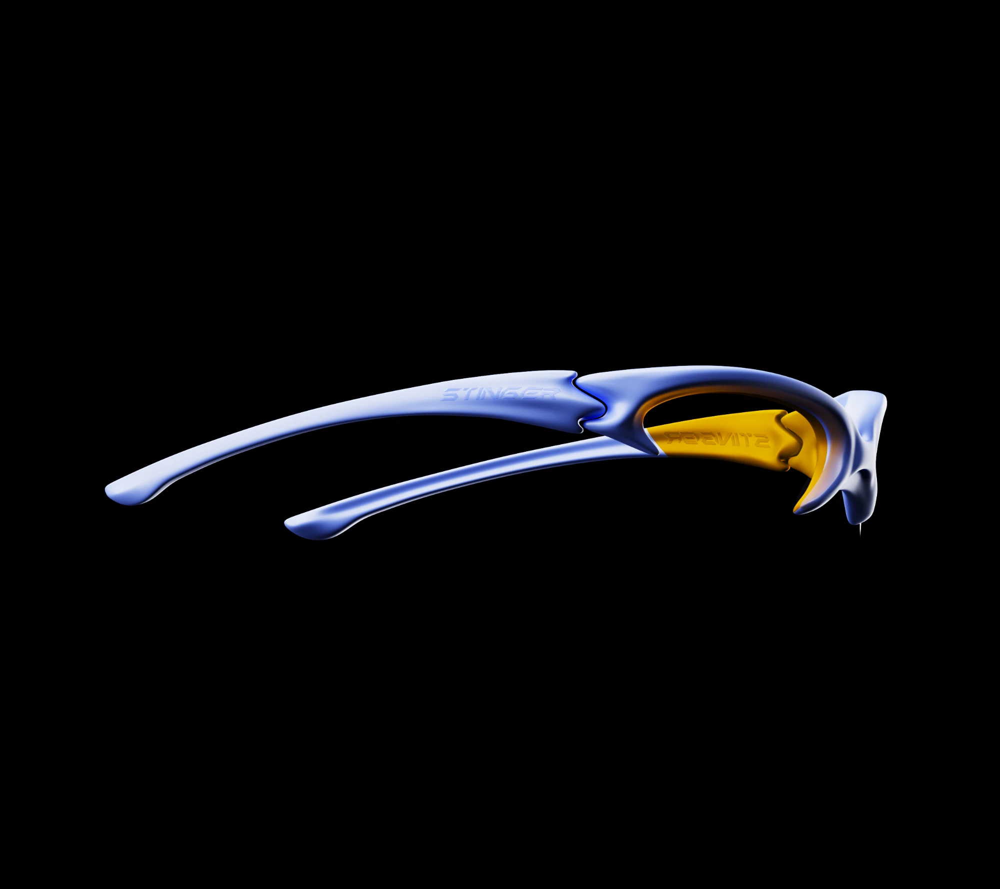
Side Pale blue with a yellow lining
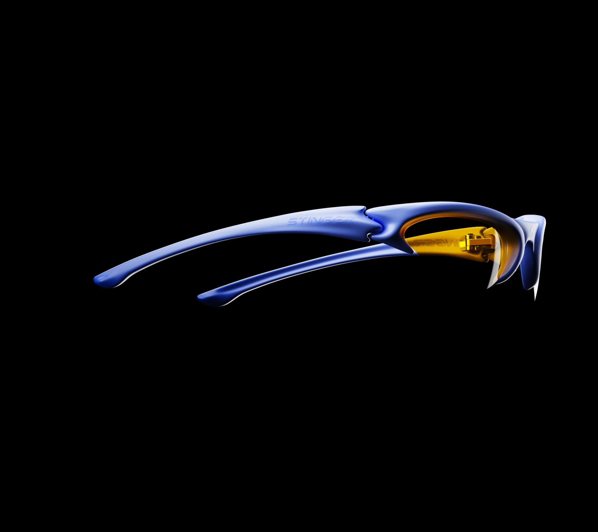
Side Cobalt with a gold hinge
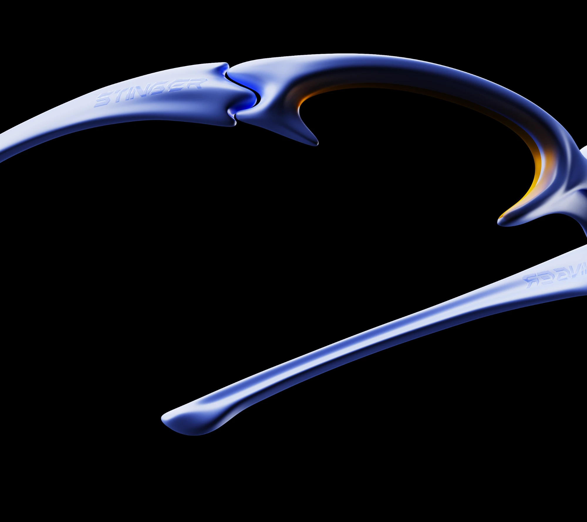
Detail Where the temple meets the frame
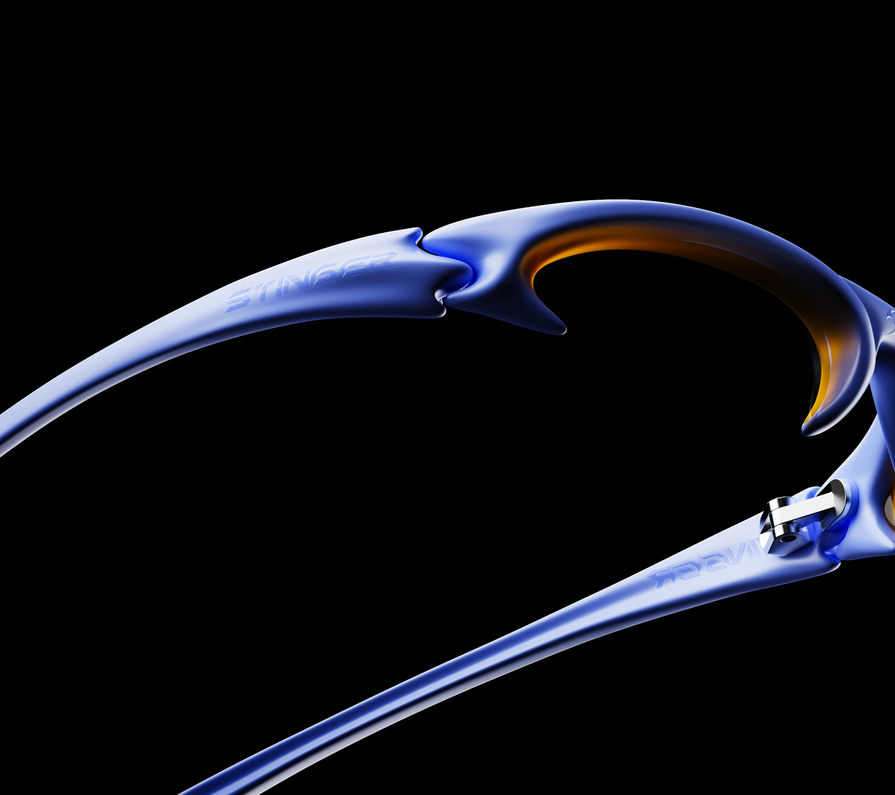
Detail The hinge
Sting rays
Obinna Oti — Product Design

02 — Architecture, residential


Vivonne cabin
Obinna Oti — Product Design

03 — Product design, footwear
![Super Slides: a render of the slide in bone, the slide in sage, olive and lavender, and a close-up of the rippled midsole. Projects, Super Slides. Process. I've worked with a wide range of clients from luxury apparel brands to independent labels helping them shape products that feel elevated, purposeful, and manufacturable. My work spans: concept development for sketches and CADing; footwear and industrial object design, blending sculptural form with technical functionality; 3D modelling, rendering, and product visualisation for collections and campaigns; tech-pack creation and production communication to guide suppliers from protos through SMS; material direction, including trims, metals, fabrics, TPU, leathers, and surface detailing.](assets/images/super-slides-frame.webp)
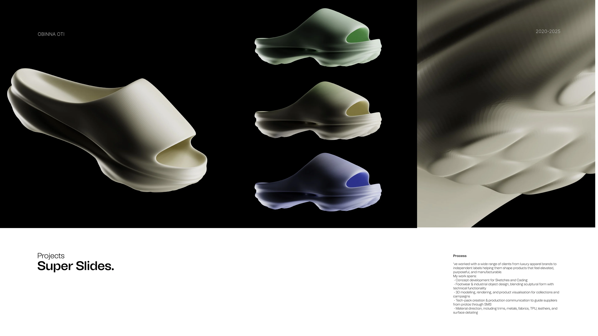
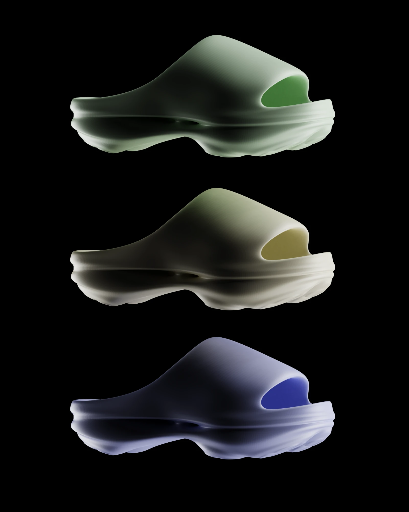
Colourways Sage, olive and lavender
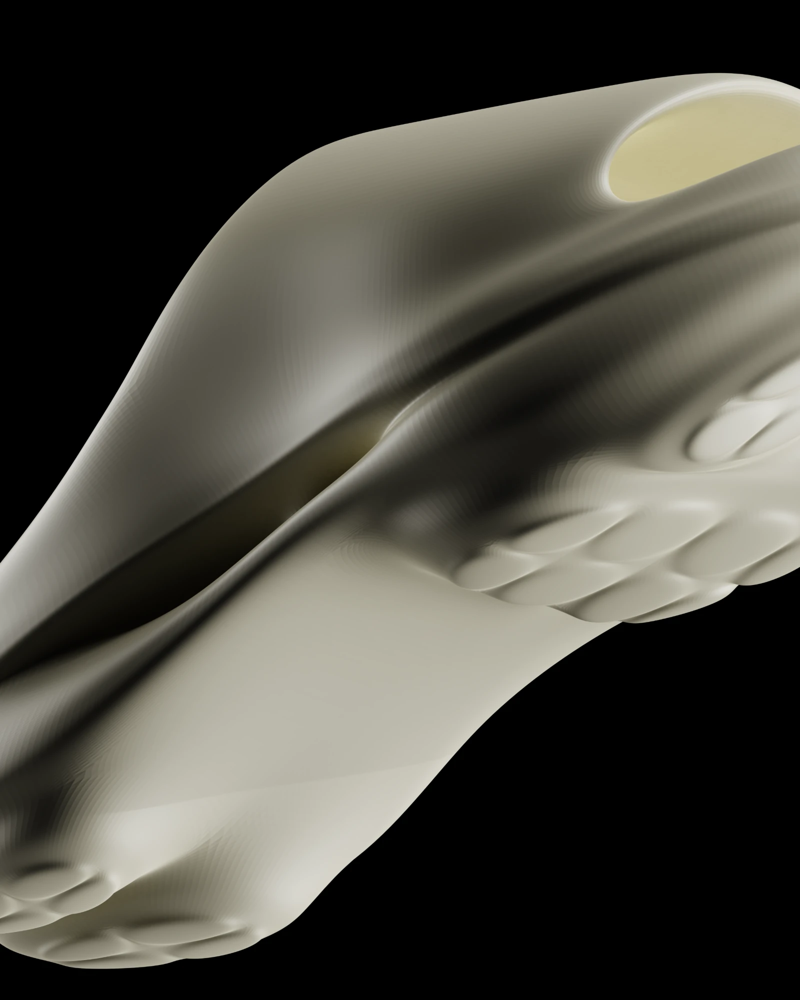
Detail The rippled midsole, up close
Super slides.
Obinna Oti — Product Design